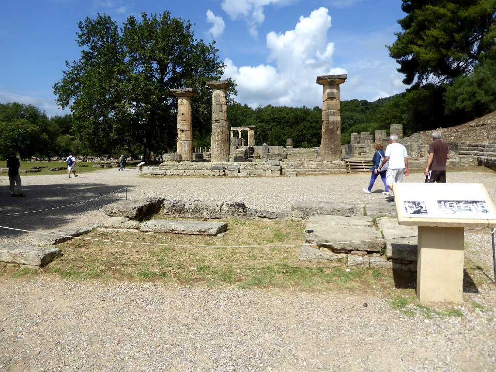
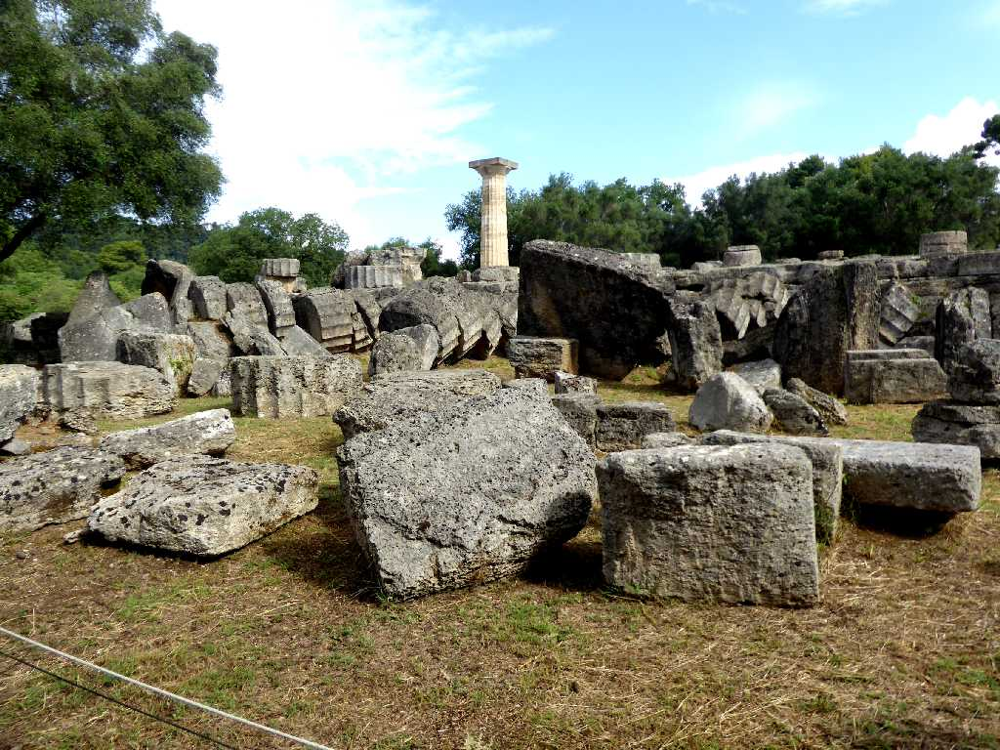
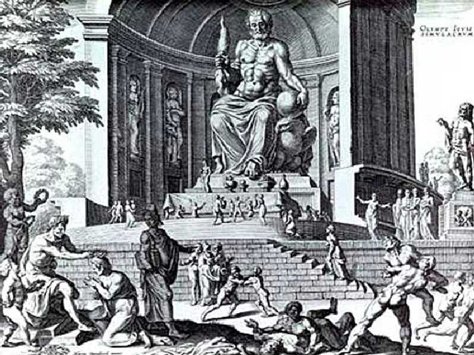
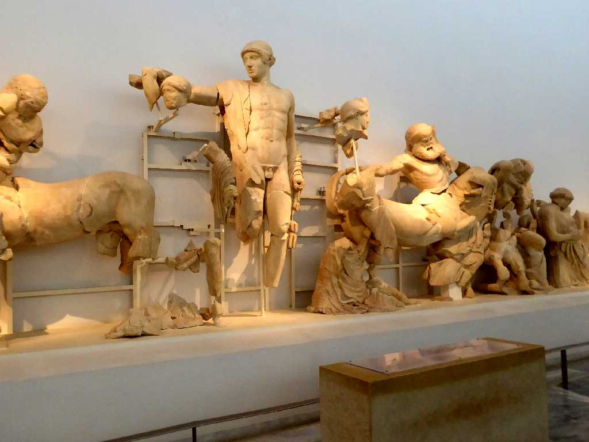
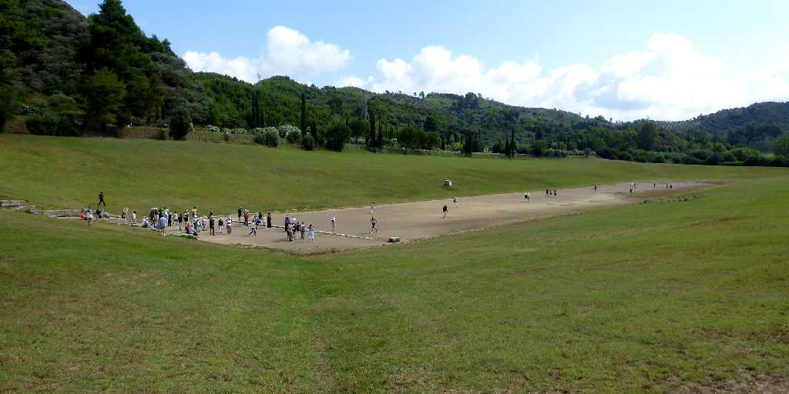
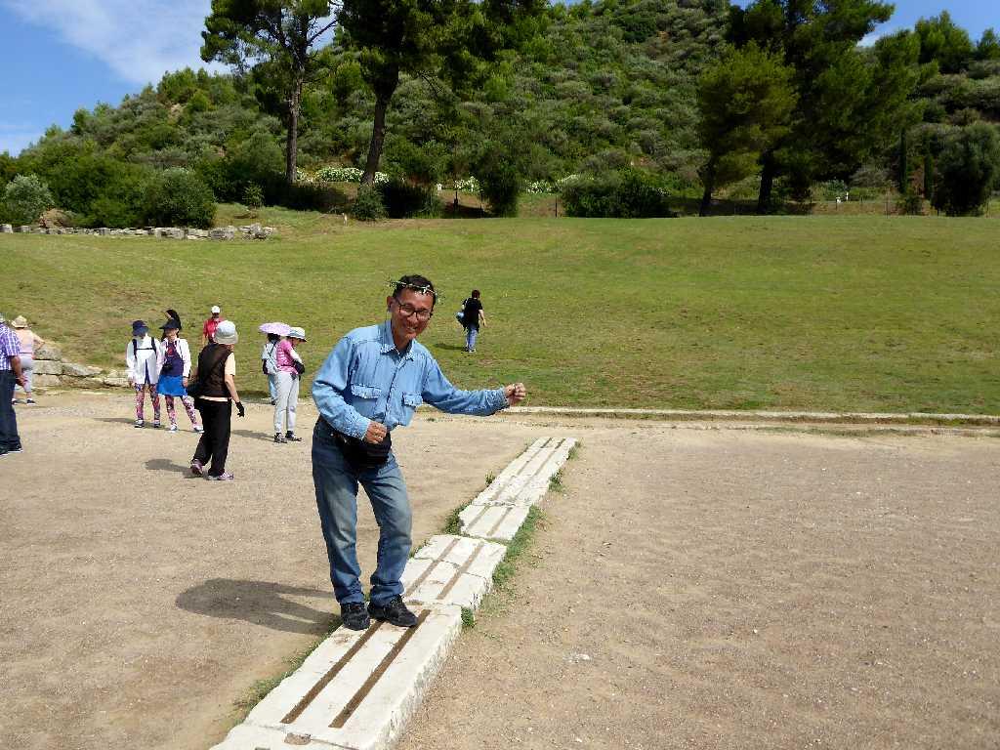
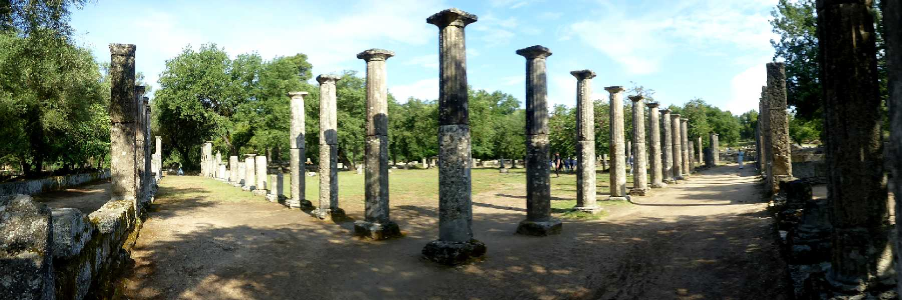
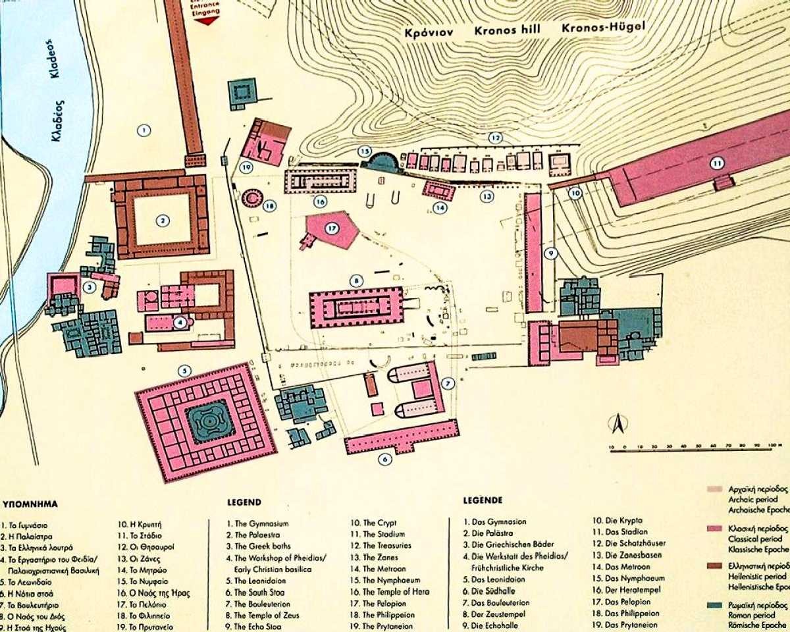

Olympia
太陽光を集光してオリンピック聖火の採火式を行うオリンピア
June 16 2018 Philippeion Olympia
古代マケドニア王フィリポス２世により紀元前３３８年ゼウスに捧げるため創られた神殿で直径１５ｍ１８本のイオニア式円柱で囲まれ アレキサンダー大王 父フィリポス２世と母オリンピアス フィリポス２世の両親 象牙と金造りの５像が安置されていた

Temple of Zeus Olympia
紀元前５世紀に創られた長さ７０ｍ幅２９ｍ高さ２１ｍあったオリンピアのゼウス神殿跡

Statue of Zeus Olympia
紀元前４３５年に創られた世界の七不思議の一つオリンピアのゼウス像

Pediment Temple of Zeus Archaeological Museum of Olympia
ゼウス神殿の正面屋根下を飾る彫像

Stadium Olympia
競技場

Start Line Stadium

Palaestra Olympia
闘技場 トレーニング場
